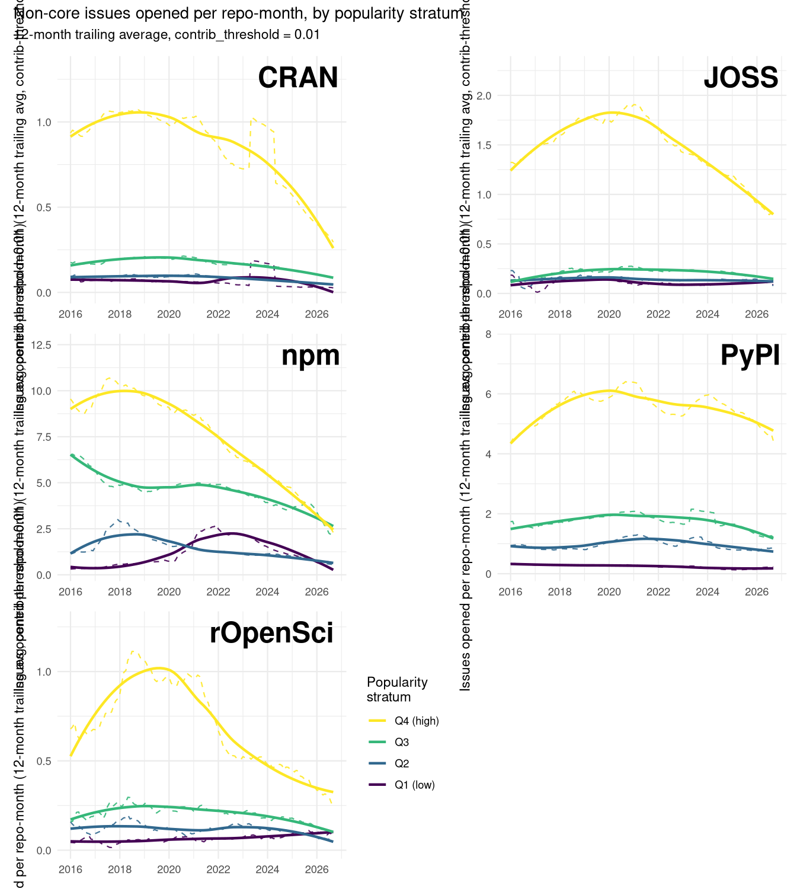
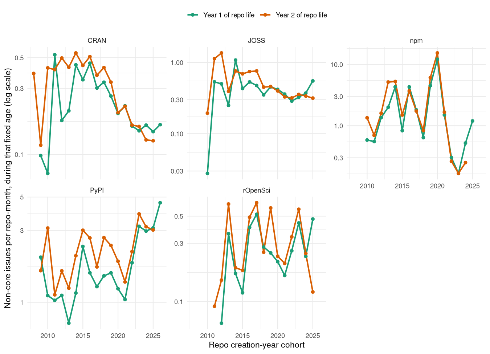
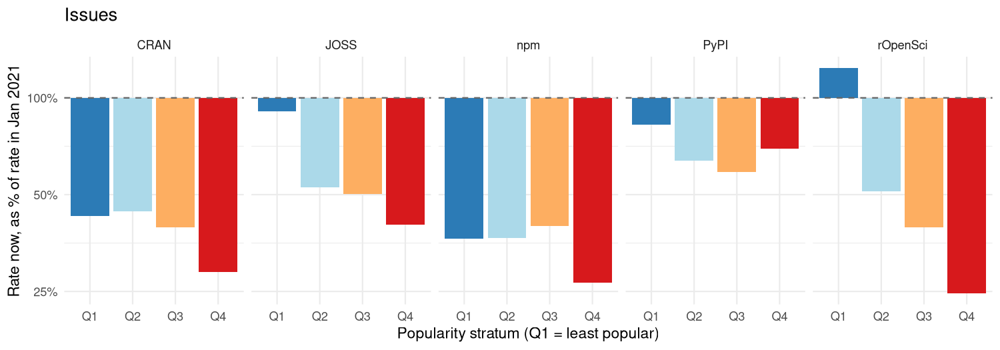
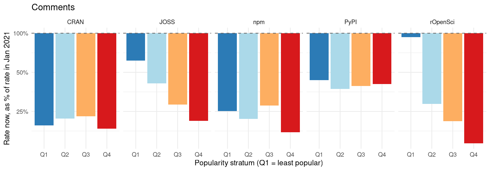
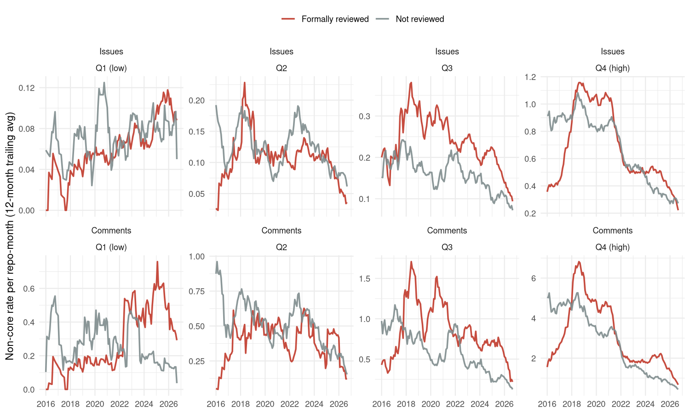
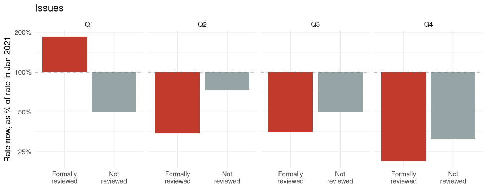
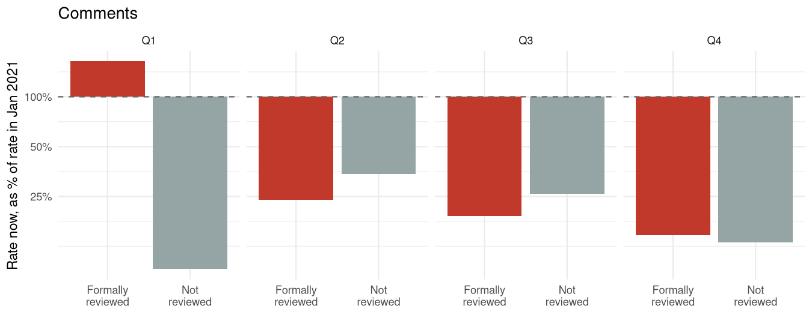

vignettes/review-dividend.Rmd
review-dividend.RmdThis vignette draws on a large, locally-fetched dataset
(repo-data-out/: every GitHub issue ever opened on ~50,000
repositories across CRAN, npm, PyPI, JOSS and rOpenSci) that is far too
large to ship with the package itself. The vignette you’re reading is
precompiled from that data - see
vignettes/review-dividend.Rmd.orig in the package source if
you want to re-run the analysis yourself once the underlying data is
available (via Git LFS) from the package repository.
Open-source contribution has always been unequal — a small number of contributors account for the overwhelming majority of activity on most projects, a pattern documented well before any of what follows (Chełkowski et al. 2016; Louridas et al. 2008). This analysis isn’t about that inequality directly. It’s about a narrower, more specific quantity: how much a repository hears from people who aren’t its regular contributors — outsiders filing issues or leaving comments, the closest available proxy for organic, community-sourced interest in a piece of software, as opposed to its maintainers talking to themselves or to each other.
Across five major open-source ecosystems — CRAN, npm and PyPI (general package registries) and JOSS and rOpenSci (two GitHub-based software review organisations) — that quantity has been falling for years, and falling further for already-popular software than for obscure software. That second part runs against the naive expectation that popular projects, with more users and more visibility, would be comparatively insulated. One exception to the whole pattern stands out: among rOpenSci’s least popular packages, non-core engagement hasn’t been falling at all — but only for the subset of those packages that went through rOpenSci’s structured public peer-review process. Split rOpenSci’s obscure packages into reviewed and non-reviewed, and the “exception” turns out to belong entirely to one of those two groups. That split, and what it does and doesn’t extend to, is what this document builds toward.
The dataset combines the five sources above, matched to their GitHub repositories, with every issue ever opened on each one fetched via the GitHub API: 3,135,960 issues across 52,461 repositories, spanning 2003–2026.
Two quantities are tracked per issue, for two different reasons. Issues — new threads opened against a repository — are the primary metric throughout: opening an issue is an active, initiating act, the clearest available signal that someone outside the project bothered to show up. Comments — replies added to already-open issues — are used throughout as a secondary, confirmatory metric: they capture a different kind of engagement (continuing a conversation rather than starting one), so agreement between the two is a check that a pattern isn’t an artifact of how one particular metric happens to be counted.
For both metrics, non-core issues/comments — those
from an author whose cumulative commit history on that repository is at
most 1% of all commits ever made to it
(contrib_threshold = 0.01) — are counted per calendar
month, divided by the number of months the repository has existed,
giving a rate per repo-month, reported throughout as a
12-month trailing average to smooth short-term noise. Each source’s
repositories are split into four popularity strata (Q1
= least popular quartile, Q4 = most popular) by log-scaled downloads
(CRAN, npm, PyPI) or GitHub stars (JOSS, rOpenSci) — necessarily
relative to each source’s own distribution, since a top-quartile CRAN
package and a top-quartile npm package don’t represent the same absolute
popularity.
rOpenSci carries one further piece of information the other four sources don’t: whether a package went through rOpenSci’s structured, public software review process before or shortly after joining the organisation. Of the 357 rOpenSci repositories used here, 230 were formally reviewed and 127 were not — including, within the least-popular quartile alone, 76 reviewed against 25 non-reviewed. That comparison is what the second half of this document turns on.
Plotting each source’s non-core issue rate since 2016, split by popularity stratum, a common shape recurs: a rise or roughly flat period through the late 2010s, a peak somewhere in the 2017–2020 window depending on source, and a decline since that is still ongoing in the most recent data.

plot of chunk trend-plots
Shown here as issues, the primary metric; the fold-change comparison in Finding 3 below confirms comments follow the same trajectory.
Nothing in this dataset directly measures why. The decline’s timing loosely coincides with two independently documented external shifts over the same window: GitHub Copilot’s move from limited preview to general availability in mid-2022 (Wikipedia contributors 2026), and a well-documented collapse in Stack Overflow’s own new-question volume beginning around the same time (Orosz 2025; Holscher 2025) — the other major venue for the same kind of peer-to-peer technical exchange. That coincidence is worth noting, but this dataset can’t adjudicate between “AI assistants substituting for asking a human”, “a broader retreat from social coding platforms in general”, or some third explanation. What it can do is establish some things the decline is not, and identify where — if anywhere — it doesn’t hold. Both of those are more tractable questions, and the rest of this document is organised around them.
One obvious alternative explanation for a falling issue rate is that it has nothing to do with any shared moment in time: repositories might simply generate less non-core interest as they themselves age — documentation accumulates, FAQs settle into closed issues, rough edges get sanded down — and every repository’s age and calendar time move in the same direction, so the two are easy to confound in a plot against calendar time alone.
The fix is a standard age/period/cohort trick: fix a repository’s age (e.g. its first or second year of life) and let cohort — the calendar year that age happened to fall in — vary instead. Pure maturation predicts a repository’s own first year of life should look much the same regardless of which calendar year that first year happened to be. A shared, calendar-time-specific effect instead predicts later cohorts showing a lower rate at that same fixed age than earlier cohorts did, even though both are equally young when measured.

plot of chunk cohort-age-plot
CRAN, JOSS and npm all show the calendar-time signature: at a fixed early age, non-core issue rates decline fairly steadily as the cohort year increases, roughly halving or more between repositories born in the mid-2010s and those born in the early 2020s. That’s not compatible with pure maturation, which predicts flat lines across cohorts at a fixed age. PyPI and rOpenSci are the two exceptions here too: neither shows a comparable cohort-driven decline at fixed age — PyPI’s fixed-age rate is, if anything, no lower for its most recent cohorts than its oldest ones, and rOpenSci’s is noisy but shows no clear trend in either direction. The same two sources that will turn out to have the least straightforward relationship with the “most popular falls furthest” pattern below already look different in this maturation check — a hint, followed up on next, that something else is going on in at least one of them.
If the decline above were simply a story about outsiders losing interest in open source generally, it should hit popular and obscure software alike. Comparing each stratum’s rate today against a fixed reference point — January 2021, chosen to sit after each source’s initial ramp-up but before the steepest part of the decline, avoiding cherry-picking each stratum’s own noisier peak — shows it doesn’t:

plot of chunk fold-change-plot-issues

plot of chunk fold-change-plot-comments
In CRAN, JOSS, npm and rOpenSci, the most popular quartile has fallen furthest, not the least popular one. CRAN’s Q4 sits at 29% of its January-2021 rate versus Q1’s 43%; JOSS’s Q4 is at 40% versus Q1’s 91%; and rOpenSci’s Q4 is at 25% while its Q1 has, on net, risen to 124% of its 2021 level. Comments (second figure) show the same ordering within every source, generally with a larger drop at every stratum — comments are the more discretionary of the two metrics, so a bigger fall there is consistent with, rather than contradicting, the issues-based picture. PyPI is the one source that doesn’t fit this stratum ordering: its most popular quartile has fallen less than its least popular one, the reverse of the other four sources. This dataset doesn’t explain why PyPI runs the other way; it’s reported here as a genuine cross-source divergence rather than folded into the general pattern.
rOpenSci’s rising Q1 is the sharpest anomaly in either figure — the only cell, across five sources, two metrics and four strata, that increased rather than fell. The rest of this document is about that one cell.
rOpenSci runs (almost all of) its packages through a structured, public peer-review process, on top of or independent from the version control and organisational structure any GitHub-hosted project already has — a distinction with no real counterpart in CRAN, npm, or (in the same form) JOSS. Whether a given rOpenSci repository was formally reviewed is recorded per-repository in this dataset, which makes it possible to test directly whether Q1’s rise is a property of rOpenSci’s least-popular packages generally, or of a specific subset of them.
Splitting rOpenSci’s non-core rate by review status, separately within each popularity stratum, answers it:

plot of chunk ropensci-reviewed-trend

plot of chunk ropensci-reviewed-foldchange-issues

plot of chunk ropensci-reviewed-foldchange-comments
In Q1, the two groups move in opposite directions. Formally reviewed Q1 packages’ non-core issue rate rose to 185% of its January-2021 level, while non-reviewed Q1 packages fell to 50% — back in line with the broad decline seen everywhere else in this dataset. Comments show an even sharper version of the same split: reviewed Q1 packages rose to 164% of their 2021 comment rate, while non-reviewed Q1 packages collapsed to just 9%. Q1’s “exception” isn’t a property of rOpenSci’s obscure packages in general — it belongs specifically to the ones that went through formal review.
That doesn’t extend to the rest of the popularity distribution, and it’s worth being direct about that rather than quietly narrowing the claim after the fact. In Q2, Q3 and Q4, reviewed packages don’t show a protective effect at all — if anything they fell by as much or more than their non-reviewed counterparts in the same stratum, for both issues and comments. Whatever review is doing in Q1, it isn’t a general “reviewed packages hold up better” effect across rOpenSci as a whole; it’s confined to the tier of packages with essentially no organic visibility of their own to begin with.
That confinement is also the most plausible reading of the mechanism. rOpenSci’s review pipeline puts a brand-new, still-obscure package in front of reviewers and, via rOpenSci’s public directory, blog, and community channels, a wider audience than its own download or star count would otherwise attract — a standing source of outside attention that an equally obscure CRAN or npm package simply has no equivalent of. For a package that’s already popular, that additional visibility channel adds comparatively little, since popularity itself is already doing that job. For a package with hardly any visibility of its own, the review pipeline may be close to the only channel generating any outside attention at all — which would explain both why the effect appears, and why it appears exactly where it does.
contribution is a lifetime measure, not a
point-in-time one. An issue filed by someone who later became a
core maintainer is excluded from “non-core” counts even for that earlier
issue, because contribution is computed from an author’s
total commit history at fetch time rather than their history as
of that issue’s date.Most of open source’s recent history of non-core, community-sourced engagement, across five different ecosystems and two different ways of measuring it, points the same direction: down, for years, and further down for already-popular software than for obscure software. Repository aging doesn’t account for it in the three sources where it’s cleanest. One specific, identifiable mechanism — rOpenSci’s formal peer-review process — is the only thing in this entire dataset that measurably counteracts it, and it does so in exactly the place organic visibility is thinnest to begin with, not across the board. That’s a narrower claim than “peer review sustains open source,” but it’s also a sharper and more useful one: a structural intervention that manufactures outside attention can apparently substitute for the attention obscure software doesn’t generate on its own — while for software that already gets that attention some other way, the same intervention doesn’t obviously do anything at all.